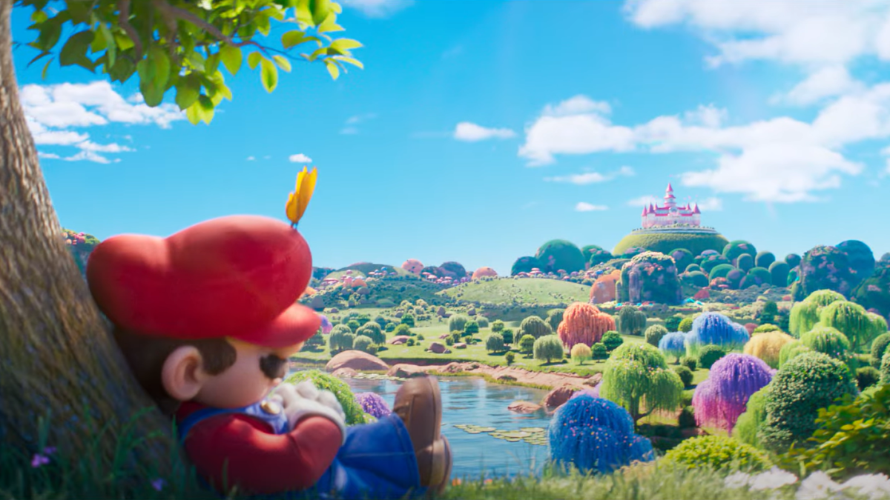
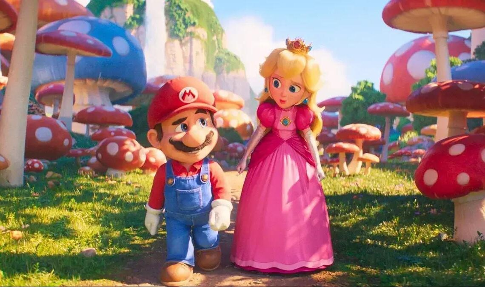

10 Curiosidades sobre o universo Mario
1) Que Mario? Antes da Nintendo dar o nome ao personagem, ele tinha alguns apelidos dentro dos jogos. Durante a sua concepção de Donkey Kong, por exemplo, seu nome era “Ossan” (tiozinho, em tradução livre). Porém, durante seu desenvolvimento, Shigeru Miyamoto o chamou de “Mr. Video”. Porém, quando DK lançou em 1981, a Big N divulgou que seu nome era “Jumpman” (talvez inspirado por Pac-Man). Com o carisma de milhões e com o fato de que ele parecia o dono do imóvel da Nintendo nos EUA — Mario Segale — a companhia decidiu homenageá-lo (ou puxar seu saco? Nunca saberemos) e o icônico herói tomou forma.


2) Apesar de ser japonês, Shigeru Miyamoto sempre se interessou pela cultura ocidental. O design do próprio Mario (enquanto Jumpman) foi inspirado nos traços fora do Japão, com um personagem bigodudo e com um grande nariz. Pelo seu próprio jogo se passar no subterrâneo, decidiram que não fazia sentido no personagem ser um carpinteiro (profissão original do herói). A partir disso, estabeleceram que ele era um encanador e todo o background veio de supetão: ele era italiano e vivia em Nova Iorque.
3) A aparência não foi ao acaso não! Quando foi criado, os gráficos que os consoles conseguiam ter eram infinitamente menores do
que os dia atual, então fazer uma boca e uma mão ficaria muito escondido ou, pelo menos, estranho. Então os designers pensaram
em colocar um bigode e uma luva no Mario, para dar um destaque na sua aparência. Sua roupa também foi pensada em destacar, com
cores bem diferentes, o azul e vermelho foram a escolha.
OBS: No primeiro jogo, o do Donkey Kong, o Jumpman (Mario)
tinha as roupas com cores invertidas às de atualmente, tendo a blusa azul escura e o macacão vermelho.


4) Se você acredita que Mario e Princesa Peach estavam conectados desde o início, na verdade não foi bem assim. Em Donkey Kong (1981), o herói salva Pauline. Na época chamada de “Lady”, ela foi resgatada e se tornou uma aliada do herói. A Princesa Peach surgiu apenas em Super Mario Bros.(1985), como a monarca responsável pelo Reino dos Cogumelos.